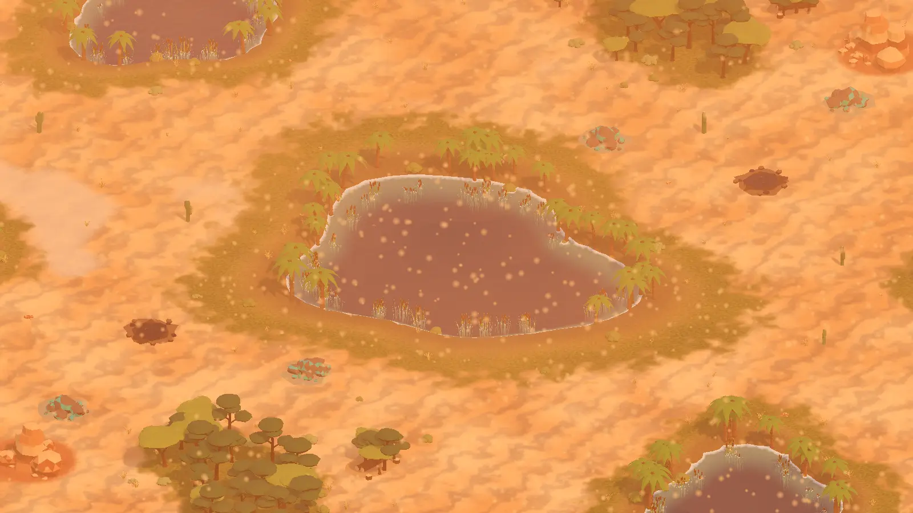

Error 404
Lost in the sandstorm
That page does not exist. Head back to the home page or download the game.

Early development. The game is playable and changing every day; expect rough edges.
Error 404
That page does not exist. Head back to the home page or download the game.
